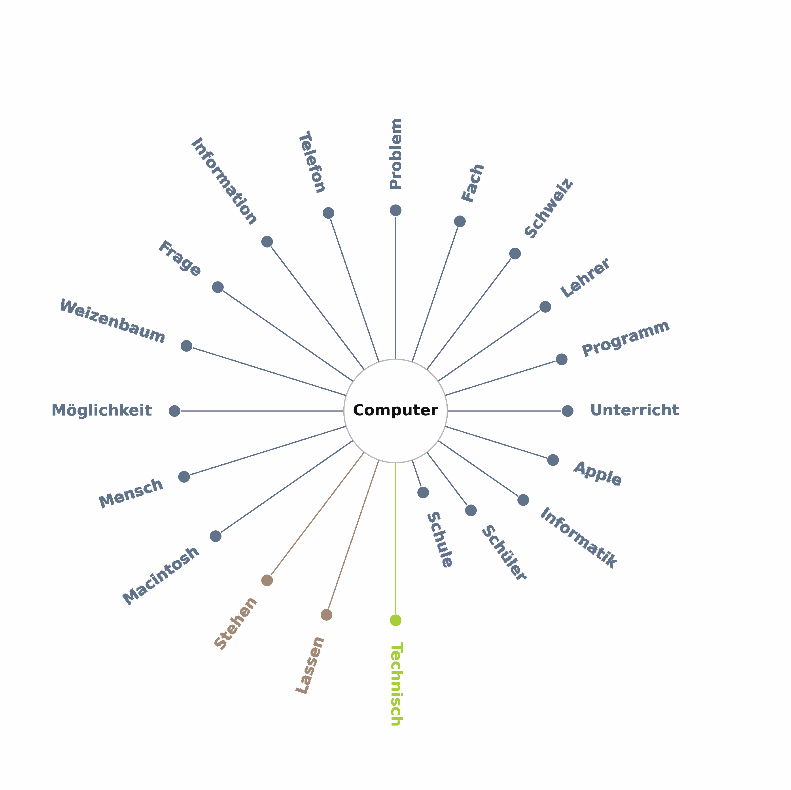
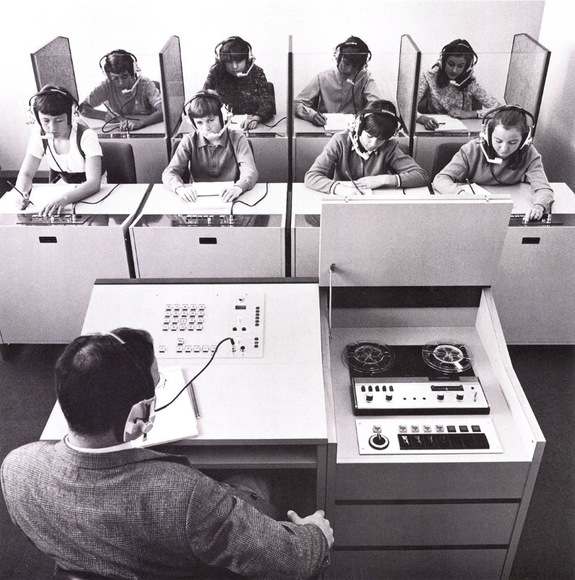
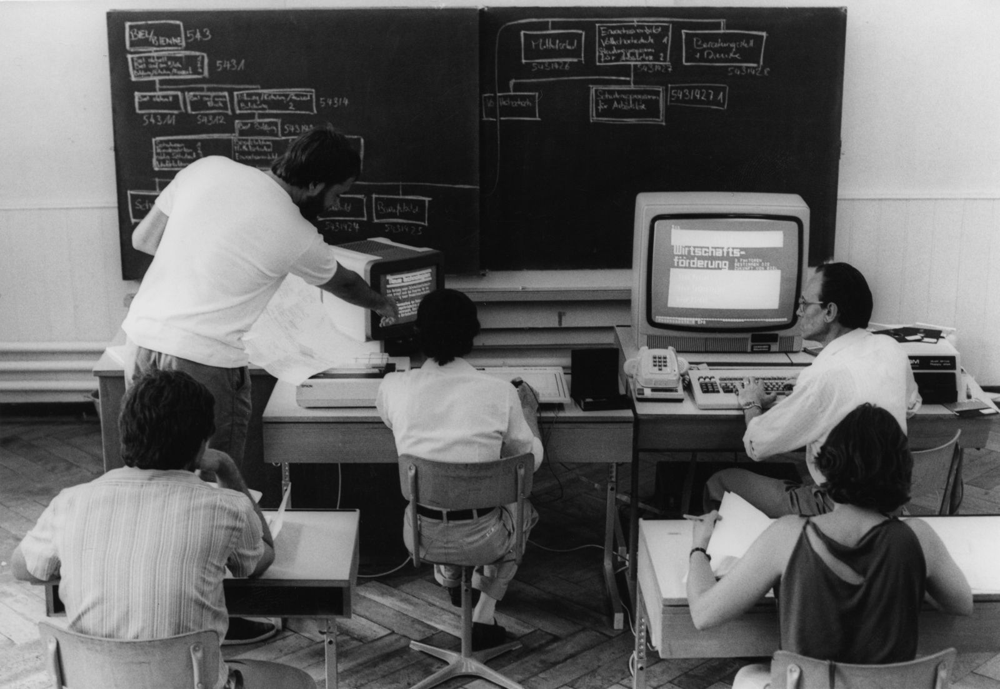

Meine Forschung bewegt sich an der Schnittstelle von Bildungsgeschichte, Technologieentwicklung und Educational Governance. Besonders interessiere ich mich für die Rolle nichtstaatlicher Akteure im Bildungswesen.
My research lies at the intersection of educational history, technology development, and governance, with a focus on the role of non-state actors in public education.

Dieses Forschungsprojekt untersucht systematisch aus historischer Perspektive den Einsatz öffentlicher Mittel zur Ausstattung von Schulen mit neuen Medien.
This research project systematically examines the use of public funds to equip schools with media infrastructure from a historical perspective.
Mehr erfahren → Learn more →
Das Projekt untersuchte, wie die bildungspolitischen Auswirkungen des technologischen Wandels zwischen 1970 und dem Ende des Dotcom-Booms um das Jahr 2000 politisch bewältigt wurden. Der Fokus lag dabei insbesondere auf politischen Initiativen in den Bereichen Sekundarschulbildung, berufliche Bildung sowie Erwachsenen- und Hochschulbildung.
The project reconstructed how the educational implications of technological change have been faced politically between 1970 and the end of the dotcom boom around 2000. The project focused especially on the political initiatives regarding secondary schooling, vocational education and training, adult and higher education.
Mehr erfahren → Learn more →